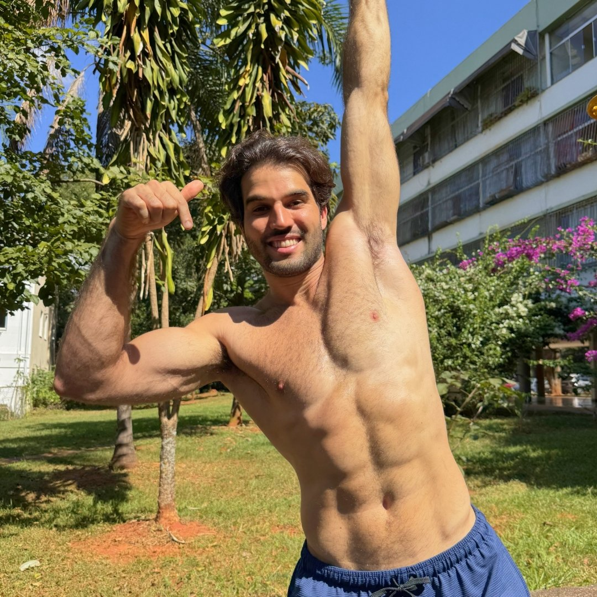
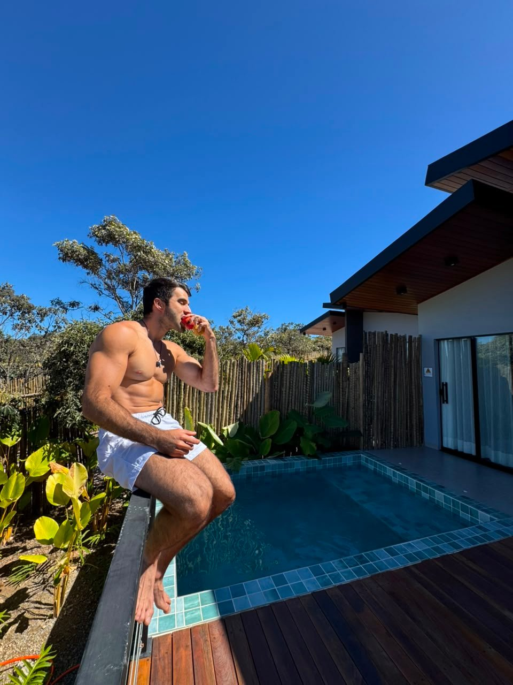

A qualidade vem junto
Olhe além das calorias: alimentos, preferências e escolhas que cabem no seu dia.
NUTRIÇÃO • ESTÉTICA • VIDA REAL
Comida de verdade, escolhas simples e uma estratégia que respeita sua rotina. Conheça a nutrição do Mateus para seus objetivos de saúde e estética.

Estética, saúde
e constância.
MUITO PRAZER, MATEUS.
Sou Mateus Mendes, nutricionista com pós-graduação em Nutrição Esportiva Funcional. Meu interesse por alimentação e movimento nasceu da vontade de mudar meu próprio corpo.
Hoje, meu trabalho conecta conhecimento e prática para ajudar você a construir hábitos que respeitem sua rotina, seus objetivos e sua relação com a comida.
O CORPO É PARTE DA HISTÓRIA.
Uma rotina de trabalho. Um almoço com amigos. O treino. O descanso. Cuidar de você também é encontrar espaço para tudo isso.
Conheça seu próximo passo
COMIDA DE VERDADE. ESTRATÉGIA PARA VOCÊ.
Olhe além das calorias: alimentos, preferências e escolhas que cabem no seu dia.
Um plano individual, com substituições para facilitar a prática.
Alimentação, sono, movimento e hábitos fazem parte da conversa.
CONHECIMENTO QUE VIRA PRÁTICA
Uma biblioteca para começar, aprofundar
e transformar sua rotina.
NUTRIÇÃO & ESTILO DE VIDA
mateus mendesAlimentação, treino e recuperação: entenda como essas peças se conectam no ganho de massa muscular.
NUTRIÇÃO & ESTILO DE VIDA
mateus mendesSeu primeiro passo para conhecer os conteúdos do Mateus sobre emagrecimento. Material em preparação.
NUTRIÇÃO & ESTILO DE VIDA
mateus mendesConheça o papel dos horários, do ambiente e dos hábitos na sua rotina de sono.
Compra em breve
NUTRIÇÃO & ESTILO DE VIDA
mateus mendesEscolhas no mercado para levar comida de verdade à sua rotina. Ebook em preparação.
Compra em breve
ACOMPANHAMENTO INDIVIDUAL
Escolha um horizonte para sua mudança.
Conheça as modalidades de consultoria.
Ponto de partida
R$ 449,00 valor total do plano
Checkout em breve
Resultados visíveis
R$ 1.181,00 valor total do plano
Checkout em breve
Resultados visíveis
R$ 1.998,00 valor total do plano
Checkout em breve
Quer ajuda para escolher seu plano?
Falar com a Bia →Fale com a Bia para conhecer as condições de atendimento e os ebooks e cursos disponíveis em cada plano. Resultados variam conforme o caso e a adesão ao acompanhamento.
ANTES DO PRIMEIRO PASSO
Peça o ebook gratuito de Hipertrofia Máxima à Bia ou compare as consultorias de 1, 3 e 6 meses.
O ebook é um material educativo. A consultoria é uma proposta de acompanhamento individual, com condições definidas no atendimento.
Hipertrofia Máxima pode ser solicitado com a Bia. O ebook gratuito de emagrecimento está em preparação. Dormir Bem e Mercado Saudável serão pagos; os checkouts ainda estão em preparação.
Compare os entregáveis dos planos de 1, 3 e 6 meses. A Bia pode explicar as opções e ajudar você a conversar com a equipe sobre seu próximo passo.
O PRÓXIMO PASSO É SEU.